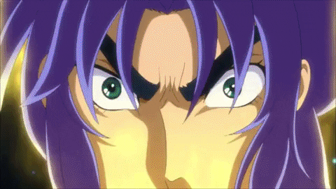
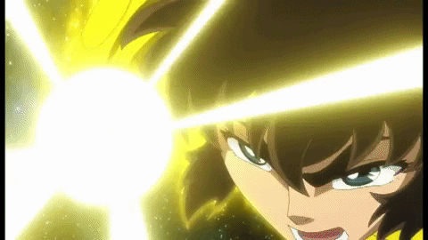
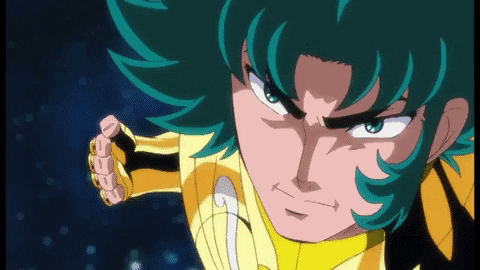

-
Mu de Áries
- Cavaleiro
- Ouro
Cavaleiro de Ouro de Áries. Mu é um homem de 20 anos de idade, nascido no dia 27 de março, ele é do signo de Áries, e por isso veste a armadura de ouro que representa tal signo. Possui total domínio sobre o sétimo sentido, assim como todos os outros cavaleiros de ouro, o que lhe possibilita a capacidade se mover na velocidade da luz. Mu é o restaurador de armaduras, toda vez que a armadura de um cavaleiro fica extremamente danificada, ele é responsável por consertá-la. Mu possui telecinese e a capacidade de se teletransportar.
- Técnicas:
* Muralha de Cristal
* Extinção Estelar
* Revolução Estelar -
Aldebaran de Touro
- Cavaleiro
- Ouro
Cavaleiro de Ouro de Touro. Aldebaran é um homem de 20 anos de idade, nascido no dia 08 de maio, ele é do signo de Touro, e por isso veste a armadura de ouro que representa tal signo. Possui total domínio sobre o sétimo sentido, assim como todos os outros cavaleiros de ouro, o que lhe possibilita a capacidade se mover na velocidade da luz. Aldebaran Possui a maior resistência física entre todos os cavaleiros, sendo assim, costuma ficar parado apenas recebendo os ataques dos inimigos sem se preocupar em se defender, para assim demonstrar sua superioridade. Sua técnica principal é baseada em manter seus braços cruzados e descruzá-los a uma velocidade extremamente elevada (velocidade da luz) e desferir uma poderosa onda de choque altamente destrutiva. Apesar de ser muito orgulhoso de sua força, ele é um dos cavaleiros com o coração mais bondoso. Aldebaran é o único Cavaleiro apresentado na franquia que é Brasileiro
- Técnicas:
* Grande Chifre -
Saga de Gêmeos
- Cavaleiro
- Ouro
Cavaleiro de Ouro de Gêmeos. Saga é um homem de 28 anos de idade, nascido no dia 30 de maio, ele é do signo de Gêmeos, e por isso veste a armadura de ouro que representa tal signo. Possui total domínio sobre o sétimo sentido, assim como todos os outros cavaleiros de ouro, o que lhe possibilita a capacidade se mover na velocidade da luz. Saga foi o primeiro grande vilão da franquia, e é considerado por muitos como o cavaleiro mais poderoso. Saga possuía uma maldição dentro de si, um espírito que servia os exército de Hades, que se manifestava na forma de uma dupla personalidade, e quando esse espírito, Lemur, tomou conta do corpo de Saga, ele matou o então grande mestre do santuário Shion de Áries, e assumiu seu lugar como mestre sem que quase nínguem soubesse, com exceão de alguns poucos. Saga também tentou matar Athena ainda bebê, porém foi impedido de conseguir fazer isso por Aiolos de Sagitário e o enfrentou e conseguiu fugir com Athena em seus braços, nesse momento, Saga, já disfarçado de grande mestre, acusou Aiolos de traição e disse que o Sagitário tentou matar Athena, o que levou a uma grande batalha que ocorrerá dentro do santuário.
- Técnicas:
* Explosão Galáctica
* Outra Dimensão
* Satã Imperial -
Kanon de Gêmeos

- Cavaleiro
- Ouro
Irmão Gêmeo de Saga, Kanon também se torna o Cavaleiro de Ouro de Gêmeos. Kanon é um homem de 28 anos de idade, nascido no dia 30 de maio, ele é do signo de Gêmeos, e por isso veste a armadura de ouro que representa tal signo. Possui total domínio sobre o sétimo sentido, assim como todos os outros cavaleiros de ouro, o que lhe possibilita a capacidade se mover na velocidade da luz. Foi o segundo grande vilão apresentado canonicamente na franquia sendo capaz de manipular Poseidon para poder destruir a terra através de um grande divúvio que o deus dos mares estava criando. Após os eventos que levaram a derrota de Poseidon, Kanon pediu perdão a Athena e se tornou o novo Cavaleiro de Ouro de Gêmeos.
- Técnicas:
* Explosão Galáctica
* Triângulo de Ouro
* Satã Imperial -
Máscara da Morte de Câncer

- Cavaleiro
- Ouro
Cavaleiro de Ouro de Câncer. Máscara da Morte é um homem de 23 anos de idade, nascido no dia 24 de julho, ele é do signo de Câncer, e por isso veste a armadura de ouro que representa tal signo. Possui total domínio sobre o sétimo sentido, assim como todos os outros cavaleiros de ouro, o que lhe possibilita a capacidade se mover na velocidade da luz. De todos os cavaleiros de ouro, Máscara da Morte é o único que de fato podemos chamar de mal, pois sua índole é extremamente perversa, ao ponto de sentir prazer em matar seus inimigos e não hesita em fazer isso mesmo que custe a vida de inocentes, até mesmo crianças. Devido a seu caráter maligno, foi abandonado por sua armadura de câncer, e depois derrotado por Shiryu de Dragão que havia acabado de despertar o Sétimo Sentido. Máscara da Morte possuía um senso de justiça um tanto duvidoso, que dizia que apenas os fortes poderiam ser considerados justos, e mesmo que esse alguém fosse maligno, se ele fosse o potêncial vencedor de uma guerra, então ele seria o verdadeiro detentor da justiça, por isso ele foi um dos poucos que sabiam da verdadeira identidade de Saga enquanto se passava por grande mestre.
- Técnicas:
* Ondas do Inferno
* Correntes do Inferno (anime) -
Aiolia de Leão
- Cavaleiro
- Ouro
Cavaleiro de Ouro de Leão. Aiolia é um homem de 20 anos de idade, nascido no dia 16 de agosto, ele é do signo de Leão, e por isso veste a armadura de ouro que representa tal signo. Possui total domínio sobre o sétimo sentido, assim como todos os outros cavaleiros de ouro, o que lhe possibilita a capacidade se mover na velocidade da luz. Aiolia passou grande parte de sua vida sendo perseguido pelos homens do santuário de Athena, após seu irmão mais velho Aiolos de Sagitário ser considerado um traidor quando Saga de Gêmeos tentou matar Athena, mas Aiolos ter intervido. Aiolia tinha 7 anos de idade quando esses evento ocorreram.
- Técnicas:
* Relâmpago de Plasma
* Cápsula do Poder -
Shaka de Virgem

- Cavaleiro
- Ouro
Cavaleiro de Ouro de Virgem. Shaka é um homem de 20 anos de idade, nascido no dia 19 de Setembro, ele é do signo de Virgem, e por isso veste a armadura de ouro que representa tal signo. Possui total domínio sobre o sétimo sentido, assim como todos os outros cavaleiros de ouro, o que lhe possibilita a capacidade se mover na velocidade da luz. Shaka é a reencarnação de Buda, e de todos os cavaleiros, é o único cujo o poder mais se aproxima do poder de um deus. Ele mantém sempre seus olhos fechados, se privando assim d sentido da visão, para poder acumular o seu cosmo, e quando abre os olhos, todo o cosmo que havia acumulado explode de uma só vez, lhe garantindo assim um poder muito superior a qualquer inimigo.
- Técnicas:
* Rendição Divina
* Tesouro do Céu
* Invocação dos Espíritos Malignos
* Khan -
Dohko de Libra

- Cavaleiro
- Ouro
Cavaleiro de Ouro de Libra. Dohko é um homem de 261 anos de idade, nascido no dia 20 de outubro, ele é do signo de Libra, e por isso veste a armadura de ouro que representa tal signo. Possui total domínio sobre o sétimo sentido, assim como todos os outros cavaleiros de ouro, o que lhe possibilita a capacidade se mover na velocidade da luz. Dohko é um dos único sobreviventes da guerra santa contra Hades que aconteceu no século 18. Após o fim da guerra, Athena lhe concedeu o poder do Misopethamenos, fazendo assim com que seu coração tivesse um batimento cardíaco de apenas 100 mil vezes ao ano (número de vezes que o coração de uma pessoa bate em um dia), lhe fazendo assim conservar o seu corpo em um estado apararente de envelhecimento, porém conservando sua juventude de 18 anos de idade intácta para quando lhe fosse necessário, pudesse voltar a ser jovem. Durante os 243 anos que se passaram desde o fim da guerra santa contra hades, o corpo de Dohko aparentava ter envelhecido junto com o tempo, lhe garantindo assim o título de Mestre Ancião, mas na verdade todos esses 243 anos lhe corresponderam a apenas 243 dias, devido seu batimento cardíaco anual equivaler a o batimento cardíaco de uma pessoa normal em apenas um dia.
- Técnicas:
* Cólera do Dragão
* Cólera dos Cem Dragões
* Dragão Voador -
Milo de Escorpião

- Cavaleiro
- Ouro
Cavaleiro de Ouro de Escorpião. Milo é um homem de 20 anos de idade, nascido no dia 09 de novembro, ele é do signo de Escorpião, e por isso veste a armadura de ouro que representa tal signo. Possui total domínio sobre o sétimo sentido, assim como todos os outros cavaleiros de ouro, o que lhe possibilita a capacidade se mover na velocidade da luz. Milo possui uma grande precisão em seus ataques, sendo assim, ele nunca erra quando ataca o inimigo. Embora seja muito poderoso, também é bastante "misericordioso", dando oportunidade para o inimigo recuar se prometer nunca mais ameaçar a vida de Athena e o santuário. Sempre que enfrenta um inimigo, Milo lhe permite escolher entre morrer enlouquecido devido a dor de seus ataques, ou com a emorragia provocada por seus ataques que provocam pequenos, porém dolorosos ferimentos.
- Técnicas:
* Agulha Escarlate
* Restrição -
Aiolos de Sagitário
- Cavaleiro
- Ouro
Cavaleiro de Ouro de Sagitário. Aiolos é um homem de 14 anos de idade, nascido no dia 30 de novembro, ele é do signo de Sagitário, e por isso veste a armadura de ouro que representa tal signo. Possui total domínio sobre o sétimo sentido, assim como todos os outros cavaleiros de ouro, o que lhe possibilita a capacidade se mover na velocidade da luz. Aiolos deveria ter se tornado o mestre do santuário, após a morte do então mestre, Shion de Áries, porém acabou morrendo após Saga de Gêmeos tentar matar Athena e Aiolos interferir. Aiolos resgatou Athena ainda bebê e na tentativa de fuga, foi perseguido e gravimente ferido por outros cavaleiros de ouro, conseguiu sobreviver após cair de uma ponte que havia sido destruída por Shura de Capricórnio, e escapou chegando até os limites do santuário de Athena, onde encontrou Mitsumasa Kido, e lhe entregou sua armadura de ouro assim como o bebê Athena para que Mitsumasa cuidasse dela e treinasse novos jovens para que encontrasse jovens e os fizessem se tornar cavaleiros, e um deles herdasse sua armadura de Sagitário no futuro. Aiolos teria 27 anos de idade se não houvesse morrido.
- Técnicas:
* Trovão Atômico (anime)
* Flecha das Sombras
* Flecha de Sagitário -
Shura de Capricórnio
- Cavaleiro
- Ouro
Cavaleiro de Ouro de Capricórnio. Shura é um homem de 23 anos de idade, nascido no dia 12 de janeiro, ele é do signo de Capricórnio, e por isso veste a armadura de ouro que representa tal signo. Possui total domínio sobre o sétimo sentido, assim como todos os outros cavaleiros de ouro, o que lhe possibilita a capacidade se mover na velocidade da luz. Nos eventos que levaram a morte de Aiolos de Sagitário, Shura estava presente, e foi ele quem deu o golpe final que destruiu a ponte que Aiolos tentava atravessar, e fez com que o Sagitário caísse de cima do penhasco que a ponte estava suspensa. Shura não permiriu que sus dois companheiros, Máscara da Morte de Câncer e Afrodite de Peixes, tentassem salvar Athena que estava nos braços de Aiolos durante a queda do penhasco, pois tinha plena certeza que já naão havia mais salvação nem para Aiolos e nem para Athena durante a queda. Assim como Máscara da Morte, Shura tinha um senso de justiça baseado na força, ou seja, apenas o mais forte poderia garantir que o mundo vivesse em paz, e por isso confiou em Saga para ser o mestre do santuário, após ter matado o antigo mestre Shion de Áries, sendo um dos poucos que sabiam da verdadeira identidade de Saga enquanto se passava por grande mestre.
- Técnicas:
* Excalibur
* Pedras Saltitantes -
Camus de Aquário

- Cavaleiro
- Ouro
Cavaleiro de Ouro de Aquário. Camus é um homem de 20 anos de idade, nascido no dia 07 de fevereiro, ele é do signo de Aquário, e por isso veste a armadura de ouro que representa tal signo. Possui total domínio sobre o sétimo sentido, assim como todos os outros cavaleiros de ouro, o lhe possibilita a capacidade se mover na velocidade da luz. Tamém conhecido como Mago do Gelo e da Água, Camus é o Cavaleiro de Ouro que protege a décima primeira casa do zodíaco no santuário de Athena, a casa de Aquário. Suas técnicas são baseadas em manupulação do ar frio, lhe garantindo assim o poder de Gelo. Mestre de Hyoga de Cisne, Camus sempre foi um homem muito frio e como uma de suas principais lições, sempre ensinou seu aprendiz a abandonar os sentimentos no campo de batalha, para que não se tornassem uma fraqueza para si e também para que pudesse se tornar cada vez mais poderoso.
- Técnicas:
* Execução Aurora
* Esquife de Gelo
* Pó de Diamante -
Afrodite de Peixes
- Cavaleiro
- Ouro
Cavaleiro de Ouro de Peixes. Afrodite é um homem de 22 anos de idade, nascido no dia 10 de março, ele é do signo de Peixes, e por isso veste a armadura de ouro que representa tal signo. Possui total domínio sobre o sétimo sentido, assim como todos os outros cavaleiros de ouro, o lhe possibilita a capacidade se mover na velocidade da luz. Afrodite estava envolvido com a morte de Aiolos de Sagitário, assim como Saga, Máscara da Morte, e Shura. Suas técnicas são baseadas no uso de rosas que são produzidas pela sua armadura de Peixes, e cada rosa possui um efeito específico e extremamente mortal nas suas vítimas. Seu senso de justiça implica que o mais forte deve governar sobre o mais fraco, e por isso não hesitou em confiar em Saga, mesmo após tentar matar Athena, e também assassinar o antigo mestre Shion de Áries, pois sabia o quão forte e poderoso Saga era, e por isso confiava que ele poderia Trazer paz para a humanidade, sendo um dos poucos que sabiam da verdadeira identidade de Saga enquanto se passava por grande mestre.
- Técnicas:
* Rosas Diabólicas Reais
* Rosas Piranhas
* Rosa Sangrenta